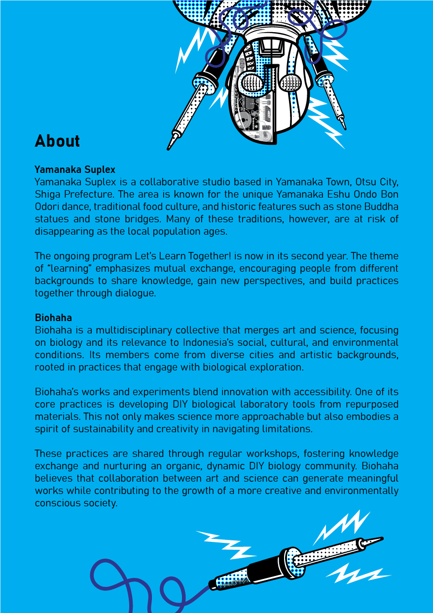

This project unfolds in three phases:
// Sensewalking & Mapping – Participants explore Yamanaka Suplex area through embodied perception, documenting their experiences through sketches, sound patterns, textures, and bodily sensations. These observations are converted into a graphic score, capturing an intersubjective experience of the landscape.
// DIY Bio-Synth Workshop – Participants assemble a light-sensitive synthesizer, establishing a connection between visual stimuli and sound.
// Collective Audio-Visual Performance – The generated score serves as a guide for an improvised performance in public space, merging movement, sound, and visual projections into an intersubjective ecology between body, space, and technology.
This project highlights spontaneity, perception, and intersubjectivity, fostering an egalitarian interaction between the city and its inhabitants. By positioning the city as a "living instrument," Sensewalking Flux celebrates the unpredictability that emerges from the ecotone between body, space, and technology.


山中 Suplex
Yamanaka Suplex was established in 2014 as a shared studio in Otsu city, located on Mount Hiei on the border between the Kyoto and Shiga Prefectures in western Japan. The studio occupies a large space, and various facilities are dedicated to making mainly sculptural works using materials such as plastic, iron, rock, ceramic, and wood. This environment not only enables artists to create large-scale art pieces, but also gives opportunities for the space to be used for purposes such as filming, performances, and talk events. In 2016, the studio also established Yamanaka Suplex Gallery in a semi-outdoor space (until 2021).
Since 2019 Yamanaka Suplex has been organizing the Yamanaka Artist-in-Residence program to open up international exchange and forge artists’ networks with local cultural practitioners around the world. Apart from the individual practices of the artists situated in the studio, Yamanaka Suplex—as an organization—curates shows, takes part in exhibitions held in cultural institutions, and holds workshops in various venues, all of which are aimed at supporting artistic activities and encouraging artists' friendships.
Past projects and exhibitions include Share-Meeting: Go Alone? Arrive Faster? Aim Further? Die Together? (Shiga, 2024), a year-long alternative space Yamanaka Suplex annex MINE (Osaka, 2022-23), Light of My World, Salt of the Blood (Tokyo & Kyoto, 2021), The Analogical Mirrors (Shiga, 2020), Show and Tell: The Artists of Yamanaka Suplex and You (Hyogo, 2019)

Learning Resonance Together! - Yamanaka Suplex
2025年8月13日[水]〜9月13日 土]
アーティスト・イン・レジデンス × 国際ラーニングプログラム「みんなで響きをラーンする！」を開催
Learning Resonance Together! Artist-in-Residence - International Learning Program
As part of our residency at Yamanaka Suplex, Biohaha conducted a Sensewalking Flux session exploring the embodied resonance between human, environment, and material. Through collective walking, listening, and sensing, participants traced the hidden rhythms of the surrounding landscape.
The process culminated in a shared performance—transforming sensory data into sound, gesture, and dialogue—reflecting Yamanaka Suplex’s spirit of learning resonance together.

Learning Resonance Together! - Yamanaka Suplex
During our residency at Yamanaka Suplex, biohaha expanded the Sensewalking Flux practice into a new terrain of resonance and collective attunement.
The session invited participants to move through the environment with heightened sensory awareness—listening to the hum of matter, the temperature of air, and the subtle feedback between body and space.
Guided by the site’s unique context and Yamanaka Suplex’s framework of learning resonance together, the group explored how perception can become a collaborative act. The walk evolved into a process of mapping invisible relations between human, environment, and biological material—each step generating data that later unfolded as a live performance and generative sound composition.
Through this shared process, biohaha continued its exploration of embodied navigation and living systems, situating Sensewalking Flux as both research and ritual within the ecology of Yamanaka Suplex’s artistic community.

Learning Resonance Together! - Yamanaka Suplex
Bodies as Instruments of Perception and Translation
In collaboration with Yamanaka Suplex, Biohaha facilitated a one-day participatory session of Sensewalking Flux in Shiga. The workshop invited participants to engage with the landscape through a multisensory lens, using their bodies as instruments of perception and translation.

The Session Unfolded in Three Parts
The first was a sensewalk through Yamanaka Suplex, where participants mapped the site through sound, texture, temperature, smell, and movement—tracing invisible connections between bodies, materials, and the coastal environment.
The second was a bio-synth creation session, transforming the collected impressions and found elements into small, living instruments—hybrid assemblages of organic and electronic material.

The final segment was a collective performance, where participants translated their sensory data into a generative soundscape, re-articulating the walk’s experience as a shared composition.
Through this process, Biohaha explored the fluid relationship between sensory experience, biological matter, and collective improvisation—echoing Yamanaka Suplex's commitment to accessibility, inclusion, and inter-sensory dialogue.

DIY Bio-Synth Workshop
Let’s Make the City Sing!
After we dive into the partiture of an environment around Yamanaka Suplex area, we need a way to translate the unseen—light, movement, and energy—into something we can hear. That’s where DIY Bio-Synths come in!
What’s a Bio-Synth?
Think of it as a tiny electronic creature that listens to the world in ways we can’t. Instead of using a microphone, it captures light intensity and turns it into sound. The brighter the light, the louder or higher the pitch—kind of like the city humming its own tune!
What We’ll Do
// Assemble Your Synth – We’ll guide you through building a simple bio-synth using sensors, circuits, and a bit of magic.
// Experiment with Light & Sound – Wave your hands, block the light, or let the sunset play its own melody.
// Prepare for Collective Composition – The bio-synths will later be used in Phase 3, where we’ll translate the sensewalking partiture into a live sound performance.
Why This Matters?
This isn’t just about making cool noises (though that’s a bonus). It’s about expanding perception, listening to the environment beyond human senses, and finding new ways to interact with urban space.
Ready to tune in? Let’s build, explore, and make the city sing!

DIY Bio-Synth Instruction Manual
Composition Structure
Like a city breathing in cycles, the piece unfolds in three evolving phases:
I. PER SENSES – Structured Exploration
Follow the path. Performers closely trace the drawn lines on their acetate sheets. Let your touch guide the light, let the synths whisper what they sense. This phase is about precision, listening, and feeling the city as it is.
II. UNISON – Free Interaction
Loosen up! Break free from strict paths. Explore textures, alter light exposure, interact with the sonic space. The city is alive—let it breathe through you.
III. DISRUPTION – Environmental Interference
External light sources shift, shadows block paths, sudden brightness challenges control. Adapt, respond, and find harmony in the chaos. The composition is no longer just yours—it belongs to the space, to unseen forces at play.
Beyond Sound: Live Processing
Throughout the performance, digital elements enhance the experience:
// Live Sound Engineering – Mixing raw DIY synth outputs, adding textures, effects, and spatial depth.
// Visual & LED Mapping – Reacting to performers’ gestures, transforming light distortions into projected visuals.
You Are Part of the Environment
Yamanaka Suplex is not just a backdrop—it’s the instrument. Through Sensewalking Flux, we dissolve the lines between performer, space, and observer. We play the unseen frequencies of the building, sculpting them into fleeting moments of sound and light.
So, let’s listen with our hands, see with our ears, and move through light.
Let the flux begin!
Sensewalking Flux - Yamanaka Suplex - Japan Documentation
Phase 1 – Sensewalking & Mapping
"Observing the environment around Yamanaka Suplex area through the senses—textures, movements, sounds, and the shifting rhythm of the landscape."
Yamanaka Suplex, Japan | 24 August 2025


Converting
"The observations result are converted into a graphic score, capturing an intersubjective experience of the landscape."
Yamanaka Suplex, Japan | 24 August 2025


Reflections on Sensewalking Flux
Phase 1: Sensewalking & Mapping
Yamanaka Suplex is a living archive of sensations—an intricate choreography of textures, movements, and sonic landscapes. In this phase, participants engaged in analytical sketching, using a structured framework to translate their sensory experiences into visual notations.
Interestingly, observations extended beyond static elements like tree bark or fabric textures; many were drawn to the movement of people—the fluidity of pedestrian rhythms, the micro-gestures of those pausing, waiting, or weaving through the streets. The interplay between overstimulation and stillness emerged as a key theme. A sudden downpour, for example, momentarily shifted the tempo of the environment, creating an unplanned moment of reflection.
Sensewalking Flux Documentation
Phase 2 – DIY Bio-Synth Workshop
"Building, tweaking, and experimenting—participants shape sound through circuits and collaboration."
Following the sensewalking session, biohaha continued the process inside the shared studio of Yamanaka Suplex, transforming sensory traces into physical and sonic forms.
Using found materials, simple circuits, and organic matter, participants collaboratively assembled bio-synths—living sound instruments that translate environmental data and bodily signals into frequencies, rhythms, and pulses.
Each bio-synth became a small organism of resonance: a hybrid of biology and electronics, sensitivity and noise. The process emphasized open, low-tech experimentation—merging intuition, improvisation, and accessible tools to build instruments that could listen back to their surroundings.
Within the collective studio space, the assembly became both a workshop and a performance. Conversations, soldering sounds, and the quiet vibration of circuits merged into a shared rhythm, echoing Yamanaka Suplex’s ethos of learning resonance together.
Through this process, biohaha extended the Sensewalking Flux methodology beyond walking—into a material dialogue between bodies, matter, and sound.
Yamanaka Suplex - Japan | 24 August 2025


Reflections on Sensewalking Flux
Phase 2: DIY Bio-Synth Workshop
From perceiving to producing—this phase invited participants to engage with sound through hands-on synthesis. The workshop was designed as a structured introduction to DIY electronic instruments, but participants quickly transformed it into a space for collaboration and improvisation.
Rather than merely assembling circuits, many took an experimental approach, testing the limits of their synths—adding, removing, modifying, and reconfiguring components. This iterative process mirrored the unpredictability of sound itself: a circuit glitch became a new sonic texture; an unexpected interaction between components sparked a new idea. In this way, the workshop embodied an open-ended methodology, where learning occurred through tactile engagement, failure, and adaptation.
Phase 3 – Collective Audio-Visual Performance
"From scattered sounds to a shared composition—listening, responding, and making Yamanaka Suplex resonate."
The residency culminated in a participatory performance, where the assembled bio-synths, field recordings, and sensory notes from the walk converged into a collective sound experience.
Participants and visitors were invited to move through the space, touch, and interact with the instruments—activating subtle changes in tone, rhythm, and vibration. The performance unfolded as an open composition, guided by the spontaneous gestures and responses of those present.
Rather than presenting a fixed outcome, the session embodied the spirit of Sensewalking Flux: a continuous process of sensing, making, and resonating together.
Through this shared improvisation, the boundaries between performer, instrument, and audience dissolved—revealing sound as a living dialogue between human, environment, and the technologies that connect them.
Yamanaka Suplex - Japan | 24 August 2025
Reflections on Sensewalking Flux
Phase 3: Collective Audio-Visual Performance
This improvisatory sound-making session transformed the city into an active collaborator. Rather than imposing a fixed composition, participants engaged in a dialogue with the space—responding to environmental sounds, each other, and the unpredictable resonances emerging from their instruments. The performance revealed a critical insight: deep listening is not merely receptive but generative; it is a practice of both attunement and intervention.
By the end of Sensewalking Flux, the distinction between observer and participant, listener and performer had blurred. What began as a structured exercise in sensory awareness evolved into a collective exploration of how we experience and reimagine our surroundings.
The question that remains: How will you continue to listen?

Credits: Documentation: Biohaha, Yamanaka Suplex, Tomohiro Yamatsuki